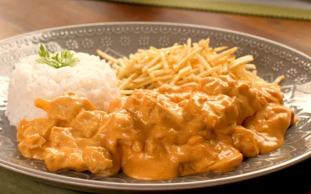

Receita de Strogonoff
Ingredientes
- 500g de carne (alcatra ou filé mignon) em tiras
- 1 cebola picada
- 2 dentes de alho picados
- 1 colher (sopa) de manteiga ou óleo
- 3 colheres (sopa) de ketchup
- 2 colheres (sopa) de mostarda
- 1 caixa de creme de leite
- Sal e pimenta a gosto
- Champignon (opcional)
- Refogue a cebola e o alho na manteiga.
- Acrescente a carne e frite até dourar.
- Adicione o ketchup, a mostarda e misture bem.
- Coloque o champignon (se usar).
- Desligue o fogo e acrescente o creme de leite.
- Ajuste sal e pimenta.

Volte para a Receitas